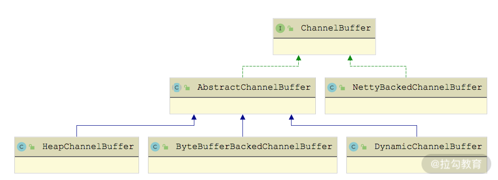
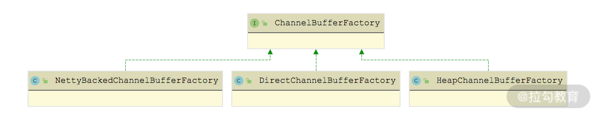
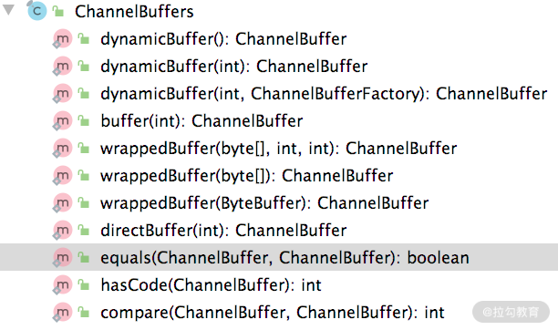

- 00 开篇词 深入掌握 Dubbo 原理与实现，提升你的职场竞争力.md.html
- 01 Dubbo 源码环境搭建：千里之行，始于足下.md.html
- 02 Dubbo 的配置总线：抓住 URL，就理解了半个 Dubbo.md.html
- 03 Dubbo SPI 精析，接口实现两极反转（上）.md.html
- 04 Dubbo SPI 精析，接口实现两极反转（下）.md.html
- 05 海量定时任务，一个时间轮搞定.md.html
- 06 ZooKeeper 与 Curator，求你别用 ZkClient 了（上）.md.html
- 07 ZooKeeper 与 Curator，求你别用 ZkClient 了（下）.md.html
- 08 代理模式与常见实现.md.html
- 09 Netty 入门，用它做网络编程都说好（上）.md.html
- 10 Netty 入门，用它做网络编程都说好（下）.md.html
- 11 简易版 RPC 框架实现（上）.md.html
- 12 简易版 RPC 框架实现（下）.md.html
- 13 本地缓存：降低 ZooKeeper 压力的一个常用手段.md.html
- 14 重试机制是网络操作的基本保证.md.html
- 15 ZooKeeper 注册中心实现，官方推荐注册中心实践.md.html
- 16 Dubbo Serialize 层：多种序列化算法，总有一款适合你.md.html
- 17 Dubbo Remoting 层核心接口分析：这居然是一套兼容所有 NIO 框架的设计？.md.html
- 18 Buffer 缓冲区：我们不生产数据，我们只是数据的搬运工.md.html
- 19 Transporter 层核心实现：编解码与线程模型一文打尽（上）.md.html
- 20 Transporter 层核心实现：编解码与线程模型一文打尽（下）.md.html
- 21 Exchange 层剖析：彻底搞懂 Request-Response 模型（上）.md.html
- 22 Exchange 层剖析：彻底搞懂 Request-Response 模型（下）.md.html
- 23 核心接口介绍，RPC 层骨架梳理.md.html
- 24 从 Protocol 起手，看服务暴露和服务引用的全流程（上）.md.html
- 25 从 Protocol 起手，看服务暴露和服务引用的全流程（下）.md.html
- 26 加餐：直击 Dubbo “心脏”，带你一起探秘 Invoker（上）.md.html
- 27 加餐：直击 Dubbo “心脏”，带你一起探秘 Invoker（下）.md.html
- 28 复杂问题简单化，代理帮你隐藏了多少底层细节？.md.html
- 29 加餐：HTTP 协议 + JSON-RPC，Dubbo 跨语言就是如此简单.md.html
- 30 Filter 接口，扩展 Dubbo 框架的常用手段指北.md.html
- 31 加餐：深潜 Directory 实现，探秘服务目录玄机.md.html
- 32 路由机制：请求到底怎么走，它说了算（上）.md.html
- 33 路由机制：请求到底怎么走，它说了算（下）.md.html
- 34 加餐：初探 Dubbo 动态配置的那些事儿.md.html
- 35 负载均衡：公平公正物尽其用的负载均衡策略，这里都有（上）.md.html
- 36 负载均衡：公平公正物尽其用的负载均衡策略，这里都有（下）.md.html
- 37 集群容错：一个好汉三个帮（上）.md.html
- 38 集群容错：一个好汉三个帮（下）.md.html
- 39 加餐：多个返回值不用怕，Merger 合并器来帮忙.md.html
- 40 加餐：模拟远程调用，Mock 机制帮你搞定.md.html
- 41 加餐：一键通关服务发布全流程.md.html
- 42 加餐：服务引用流程全解析.md.html
- 43 服务自省设计方案：新版本新方案.md.html
- 44 元数据方案深度剖析，如何避免注册中心数据量膨胀？.md.html
- 45 加餐：深入服务自省方案中的服务发布订阅（上）.md.html
- 46 加餐：深入服务自省方案中的服务发布订阅（下）.md.html
- 47 配置中心设计与实现：集中化配置 and 本地化配置，我都要（上）.md.html
- 48 配置中心设计与实现：集中化配置 and 本地化配置，我都要（下）.md.html
- 49 结束语 认真学习，缩小差距.md.html
- 捐赠
18 Buffer 缓冲区：我们不生产数据，我们只是数据的搬运工
Buffer 是一种字节容器，在 Netty 等 NIO 框架中都有类似的设计，例如，Java NIO 中的ByteBuffer、Netty4 中的 ByteBuf。Dubbo 抽象出了 ChannelBuffer 接口对底层 NIO 框架中的 Buffer 设计进行统一，其子类如下图所示：

ChannelBuffer 继承关系图
下面我们就按照 ChannelBuffer 的继承结构，从顶层的 ChannelBuffer 接口开始，逐个向下介绍，直至最底层的各个实现类。
ChannelBuffer 接口
ChannelBuffer 接口的设计与 Netty4 中 ByteBuf 抽象类的设计基本一致，也有 readerIndex 和 writerIndex 指针的概念，如下所示，它们的核心方法也是如出一辙。
- getBytes()、setBytes() 方法：从参数指定的位置读、写当前 ChannelBuffer，不会修改 readerIndex 和 writerIndex 指针的位置。
- readBytes() 、writeBytes() 方法：也是读、写当前 ChannelBuffer，但是 readBytes() 方法会从 readerIndex 指针开始读取数据，并移动 readerIndex 指针；writeBytes() 方法会从 writerIndex 指针位置开始写入数据，并移动 writerIndex 指针。
- markReaderIndex()、markWriterIndex() 方法：记录当前 readerIndex 指针和 writerIndex 指针的位置，一般会和 resetReaderIndex()、resetWriterIndex() 方法配套使用。resetReaderIndex() 方法会将 readerIndex 指针重置到 markReaderIndex() 方法标记的位置，resetwriterIndex() 方法同理。
- capacity()、clear()、copy() 等辅助方法用来获取 ChannelBuffer 容量以及实现清理、拷贝数据的功能，这里不再赘述。
- factory() 方法：该方法返回创建 ChannelBuffer 的工厂对象，ChannelBufferFactory 中定义了多个 getBuffer() 方法重载来创建 ChannelBuffer，如下图所示，这些 ChannelBufferFactory的实现都是单例的。

ChannelBufferFactory 继承关系图
AbstractChannelBuffer 抽象类实现了 ChannelBuffer 接口的大部分方法，其核心是维护了以下四个索引。
- readerIndex、writerIndex（int 类型）：通过 readBytes() 方法及其重载读取数据时，会后移 readerIndex 索引；通过 writeBytes() 方法及其重载写入数据的时候，会后移 writerIndex 索引。
- markedReaderIndex、markedWriterIndex（int 类型）：实现记录 readerIndex（writerIndex）以及回滚 readerIndex（writerIndex）的功能，前面我们已经介绍过markReaderIndex() 方法、resetReaderIndex() 方法以及 markWriterIndex() 方法、resetWriterIndex() 方法，你可以对比学习。
AbstractChannelBuffer 中 readBytes() 和 writeBytes() 方法的各个重载最终会通过 getBytes() 方法和 setBytes() 方法实现数据的读写，这些方法在 AbstractChannelBuffer 子类中实现。下面以读写一个 byte 数组为例，进行介绍：
public void readBytes(byte[] dst, int dstIndex, int length) {
// 检测可读字节数是否足够
checkReadableBytes(length);
// 将readerIndex之后的length个字节数读取到dst数组中dstIndex~
// dstIndex+length的位置
getBytes(readerIndex, dst, dstIndex, length);
// 将readerIndex后移length个字节
readerIndex += length;
}
public void writeBytes(byte[] src, int srcIndex, int length) {
// 将src数组中srcIndex~srcIndex+length的数据写入当前buffer中
// writerIndex~writerIndex+length的位置
setBytes(writerIndex, src, srcIndex, length);
// 将writeIndex后移length个字节
writerIndex += length;
}
Buffer 各实现类解析
了解了 ChannelBuffer 接口的核心方法以及 AbstractChannelBuffer 的公共实现之后，我们再来看 ChannelBuffer 的具体实现。
HeapChannelBuffer 是基于字节数组的 ChannelBuffer 实现，我们可以看到其中有一个 array（byte[]数组）字段，它就是 HeapChannelBuffer 存储数据的地方。HeapChannelBuffer 的 setBytes() 以及 getBytes() 方法实现是调用 System.arraycopy() 方法完成数组操作的，具体实现如下：
public void setBytes(int index, byte[] src, int srcIndex, int length) {
System.arraycopy(src, srcIndex, array, index, length);
}
public void getBytes(int index, byte[] dst, int dstIndex, int length) {
System.arraycopy(array, index, dst, dstIndex, length);
}
HeapChannelBuffer 对应的 ChannelBufferFactory 实现是 HeapChannelBufferFactory，其 getBuffer() 方法会通过 ChannelBuffers 这个工具类创建一个指定大小 HeapChannelBuffer 对象，下面简单介绍两个 getBuffer() 方法重载：
@Override
public ChannelBuffer getBuffer(int capacity) {
// 新建一个HeapChannelBuffer，底层的会新建一个长度为capacity的byte数组
return ChannelBuffers.buffer(capacity);
}
@Override
public ChannelBuffer getBuffer(byte[] array, int offset, int length) {
// 新建一个HeapChannelBuffer，并且会拷贝array数组中offset~offset+lenght
// 的数据到新HeapChannelBuffer中
return ChannelBuffers.wrappedBuffer(array, offset, length);
}
其他 getBuffer() 方法重载这里就不再展示，你若感兴趣的话可以参考源码进行学习。 DynamicChannelBuffer 可以认为是其他 ChannelBuffer 的装饰器，它可以为其他 ChannelBuffer 添加动态扩展容量的功能。DynamicChannelBuffer 中有两个核心字段：
- buffer（ChannelBuffer 类型），是被修饰的 ChannelBuffer，默认为 HeapChannelBuffer。
- factory（ChannelBufferFactory 类型），用于创建被修饰的 HeapChannelBuffer 对象的 ChannelBufferFactory 工厂，默认为 HeapChannelBufferFactory。
DynamicChannelBuffer 需要关注的是 ensureWritableBytes() 方法，该方法实现了动态扩容的功能，在每次写入数据之前，都需要调用该方法确定当前可用空间是否足够，调用位置如下图所示：

ensureWritableBytes() 方法如果检测到底层 ChannelBuffer 对象的空间不足，则会创建一个新的 ChannelBuffer（空间扩大为原来的两倍），然后将原来 ChannelBuffer 中的数据拷贝到新 ChannelBuffer 中，最后将 buffer 字段指向新 ChannelBuffer 对象，完成整个扩容操作。ensureWritableBytes() 方法的具体实现如下：
public void ensureWritableBytes(int minWritableBytes) {
if (minWritableBytes <= writableBytes()) {
return;
}
int newCapacity;
if (capacity() == 0) {
newCapacity = 1;
} else {
newCapacity = capacity();
}
int minNewCapacity = writerIndex() + minWritableBytes;
while (newCapacity < minNewCapacity) {
newCapacity <<= 1;
}
ChannelBuffer newBuffer = factory().getBuffer(newCapacity);
newBuffer.writeBytes(buffer, 0, writerIndex());
buffer = newBuffer;
}
ByteBufferBackedChannelBuffer 是基于 Java NIO 中 ByteBuffer 的 ChannelBuffer 实现，其中的方法基本都是通过组合 ByteBuffer 的 API 实现的。下面以 getBytes() 方法和 setBytes() 方法的一个重载为例，进行分析：
public void getBytes(int index, byte[] dst, int dstIndex, int length) {
ByteBuffer data = buffer.duplicate();
try {
// 移动ByteBuffer中的指针
data.limit(index + length).position(index);
} catch (IllegalArgumentException e) {
throw new IndexOutOfBoundsException();
}
// 通过ByteBuffer的get()方法实现读取
data.get(dst, dstIndex, length);
}
public void setBytes(int index, byte[] src, int srcIndex, int length) {
ByteBuffer data = buffer.duplicate();
// 移动ByteBuffer中的指针
data.limit(index + length).position(index);
// 将数据写入底层的ByteBuffer中
data.put(src, srcIndex, length);
}
ByteBufferBackedChannelBuffer 的其他方法实现比较简单，这里就不再展示，你若感兴趣的话可以参考源码进行学习。
NettyBackedChannelBuffer 是基于 Netty 中 ByteBuf 的 ChannelBuffer 实现，Netty 中的 ByteBuf 内部维护了 readerIndex 和 writerIndex 以及 markedReaderIndex、markedWriterIndex 这四个索引，所以 NettyBackedChannelBuffer 没有再继承 AbstractChannelBuffer 抽象类，而是直接实现了 ChannelBuffer 接口。
NettyBackedChannelBuffer 对 ChannelBuffer 接口的实现都是调用底层封装的 Netty ByteBuf 实现的，这里就不再展开介绍，你若感兴趣的话也可以参考相关代码进行学习。
相关 Stream 以及门面类
在 ChannelBuffer 基础上，Dubbo 提供了一套输入输出流，如下图所示：

ChannelBufferInputStream 底层封装了一个 ChannelBuffer，其实现 InputStream 接口的 read*() 方法全部都是从 ChannelBuffer 中读取数据。ChannelBufferInputStream 中还维护了一个 startIndex 和一个endIndex 索引，作为读取数据的起止位置。ChannelBufferOutputStream 与 ChannelBufferInputStream 类似，会向底层的 ChannelBuffer 写入数据，这里就不再展开，你若感兴趣的话可以参考源码进行分析。
最后要介绍 ChannelBuffers 这个门面类，下图展示了 ChannelBuffers 这个门面类的所有方法：

对这些方法进行分类，可归纳出如下这些方法。
- dynamicBuffer() 方法：创建 DynamicChannelBuffer 对象，初始化大小由第一个参数指定，默认为 256。
- buffer() 方法：创建指定大小的 HeapChannelBuffer 对象。
- wrappedBuffer() 方法：将传入的 byte[] 数字封装成 HeapChannelBuffer 对象。
- directBuffer() 方法：创建 ByteBufferBackedChannelBuffer 对象，需要注意的是，底层的 ByteBuffer 使用的堆外内存，需要特别关注堆外内存的管理。
- equals() 方法：用于比较两个 ChannelBuffer 是否相同，其中会逐个比较两个 ChannelBuffer 中的前 7 个可读字节，只有两者完全一致，才算两个 ChannelBuffer 相同。其核心实现如下示例代码：
public static boolean equals(ChannelBuffer bufferA, ChannelBuffer bufferB) {
final int aLen = bufferA.readableBytes();
if (aLen != bufferB.readableBytes()) {
return false; // 比较两个ChannelBuffer的可读字节数
}
final int byteCount = aLen & 7; // 只比较前7个字节
int aIndex = bufferA.readerIndex();
int bIndex = bufferB.readerIndex();
for (int i = byteCount; i > 0; i--) {
if (bufferA.getByte(aIndex) != bufferB.getByte(bIndex)) {
return false; // 前7个字节发现不同，则返回false
}
aIndex++;
bIndex++;
}
return true;
}
- compare() 方法：用于比较两个 ChannelBuffer 的大小，会逐个比较两个 ChannelBuffer 中的全部可读字节，具体实现与 equals() 方法类似，这里就不再重复讲述。
总结
本课时重点介绍了 dubbo-remoting 模块 buffers 包中的核心实现。我们首先介绍了 ChannelBuffer 接口这一个顶层接口，了解了 ChannelBuffer 提供的核心功能和运作原理；接下来介绍了 ChannelBuffer 的多种实现，其中包括 HeapChannelBuffer、DynamicChannelBuffer、ByteBufferBackedChannelBuffer 等具体实现类，以及 AbstractChannelBuffer 这个抽象类；最后分析了 ChannelBufferFactory 使用到的 ChannelBuffers 工具类以及在 ChannelBuffer 之上封装的 InputStream 和 OutputStream 实现。
关于本课时，你若还有什么疑问或想法，欢迎你留言跟我分享。
© 2019 - 2023 Liangliang Lee. Powered by gin and hexo-theme-book.